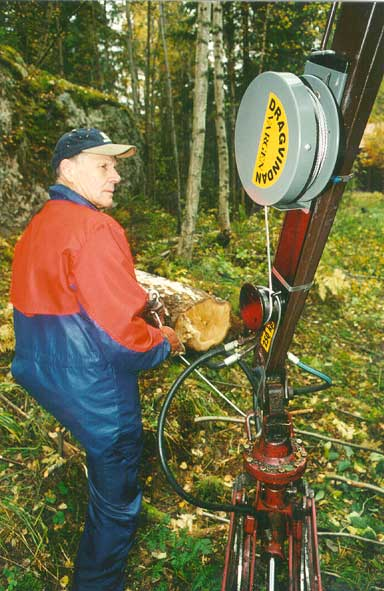
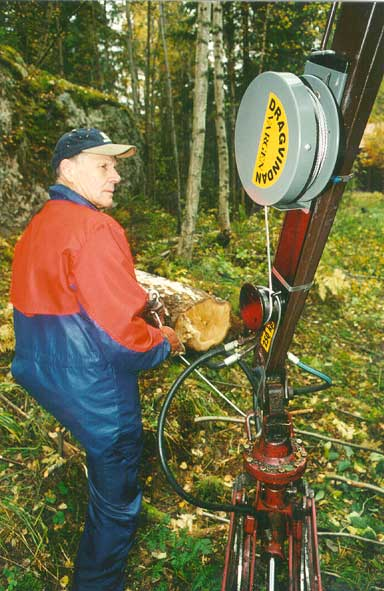

”Vinschkroken Läggav” Vinschkroken som automatiskt frikopplar stocken
Instuktionsbeskrivning
Min erfarenhet av ryggproblem har fått mig att driva denna produkt-utveckling inom småskaligt skogsbruk. Produkter som förenklar arbetet i skogen och framför allt förebygger ryggskador.
”Dragvindan Vargen”
Vinschen som drivs med kranarmens rörelse
(se rörlig bild nedan)
Instuktionsbeskrivning
”Vinschkroken Läggav” Vinschkroken som automatiskt frikopplar stocken
Instuktionsbeskrivning

”Lyfthjälpen Vargen”
Flyttar mycket enkelt griplastarkranens tunga spakreglage vid på- och av-montering traktor
Instuktionsbeskrivning 1
Instuktionsbeskrivning 2

Produkterna tillverkas på beställning genom att kontakta:
HT METALLTRYCKERI AB
BRYGGAVÄGEN 115
178 31 Ekerö
Stockholms län
Tel: 08-56034146
Dragvindan "Vargen" är ett vinschsystem innehållande vinda och omtagslåsning samt styrning där pendelrörelse och/eller rotationsrörelse av arm nyttjas som kraftkälla. Konstruktionen är avsedd för griplastare, grävaggregat och liknande konstruktioner med sådan rörelsefunktion.
 En principskiss över dragvindans funktion och innehållande delar.
En principskiss över dragvindans funktion och innehållande delar.
 Närbild på dragvindans låsmekanism (patenterad). Wiren läggs runt i ett ”enkelt halvslag” kring den lagrade axeln.
Närbild på dragvindans låsmekanism (patenterad). Wiren läggs runt i ett ”enkelt halvslag” kring den lagrade axeln.
 
